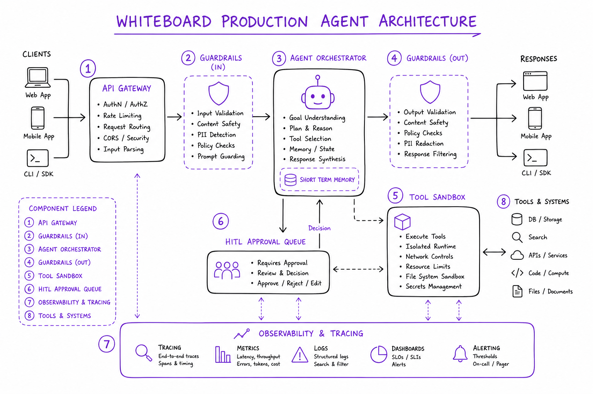
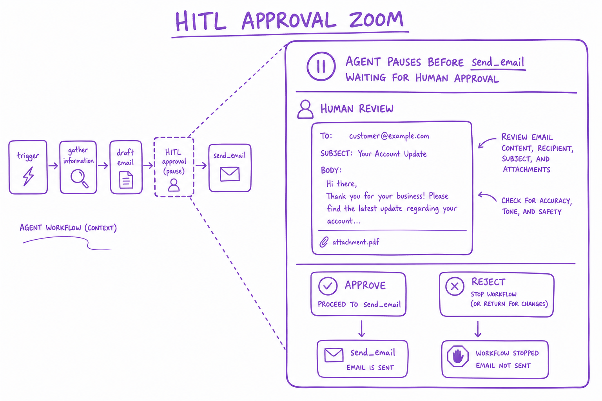
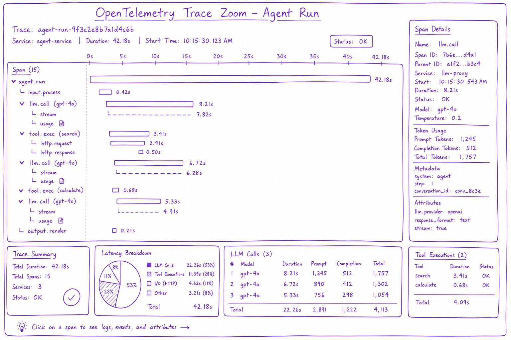

Production Agent (HITL) // Systems
Ship agents safely: human-in-the-loop approvals, guardrails, tracing, cost caps, graceful degradation. Production agents are bounded loops, not autonomous AGI.

Production agent stack: API gateway, agent orchestrator with termination controller, HITL approval queue, tool sandbox, guardrails filter, observability pipeline.
01 — What & Why
Dev agents demo well; production agents fail on edge cases, cost overruns, and destructive actions. HITL and guardrails are non-negotiable for write actions.
01a — Core Concepts
| Term | Definition | Gotcha |
|---|---|---|
| HITL | Human approves before risky action | Adds latency — async queue |
| Guardrails | Input/output policy filters | Not a substitute for sandbox |
| Circuit breaker | Stop calling failing tools | Need half-open retry |
01b — API Surface
POST /v1/agent/run
{ task, user_id, hitl_mode: "required_for_write" }
-> { run_id, status: "awaiting_approval", pending_action: {...} }
POST /v1/agent/runs/{id}/approve
-> resumes execution02 — When to Use / When NOT
| Control | Use When | Skip When |
|---|---|---|
| Full auto | Read-only search/RAG | Send email, charge card, delete data |
| HITL | Write/destructive tools | Read-only always safe |
03 — Architecture
API GW -> Agent Orchestrator -> [Guardrails in/out] -> Tool Sandbox
|-> HITL Queue (async approve)
|-> Trace -> Langfuse/OTel04 — Deep Dive: HITL

Agent pauses before send_email; human reviews in approval UI; approve or reject resumes or aborts
Classify tools: read (auto), write (approve), destructive (manager approve). Timeout 24h → abort with notification.
05 — Deep Dive: Guardrails
Input: PII detection, prompt injection scan. Output: toxicity, data leak, off-topic. NeMo Guardrails, Guardrails AI, custom regex.
06 — Deep Dive: Tracing

OpenTelemetry trace showing LLM calls, tool executions, latencies, token counts per agent run
LangSmith, Langfuse, Arize. Span per LLM call and tool. Store prompts/responses for replay (PII redacted).
07 — Deep Dive: Cost Caps
max_llm_calls=15, max_cost_usd=0.50 per run. Track token usage per span. Alert on 10× median cost queries.
08 — Deep Dive: Graceful Degrade
On timeout: return partial answer + 'could not complete action'. Fallback to simpler chain without tools. Never infinite spin.
09 — Production & Ops
- Run replay suite on every deploy
- On-call runbook for agent failures
- Rate limit per user/org
10 — Where It Shows Up
11 — Common Pitfalls
- No HITL on write tools
- Logging full prompts with PII
- No max_iterations — runaway loops
- Guardrails only on output not input docs